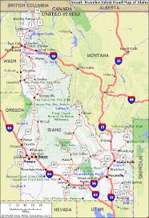
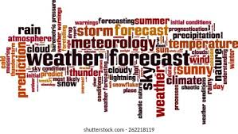
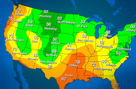

Lato

I chose Lato for my font of choice with various weights because I like it because of it's uniqueness and it's normal enough not to distract from the actual content of the page.
Typography
 Typography is everywhere we look. It's in the books we read, on the websites we visit, even in everyday life—on street signs, bumper stickers, and product packaging. But what exactly is typography? Simply put, typography is the style or appearance of text. It can also refer to the art of working with text—something you probably do all the time if you create documents or other projects for work, school, or yourself. Idaho
The Idaho Weatherization Assistance Program is the nation's largest residential energy efficiency program. To be eligible for this benefit program, you must be a resident of Idaho.